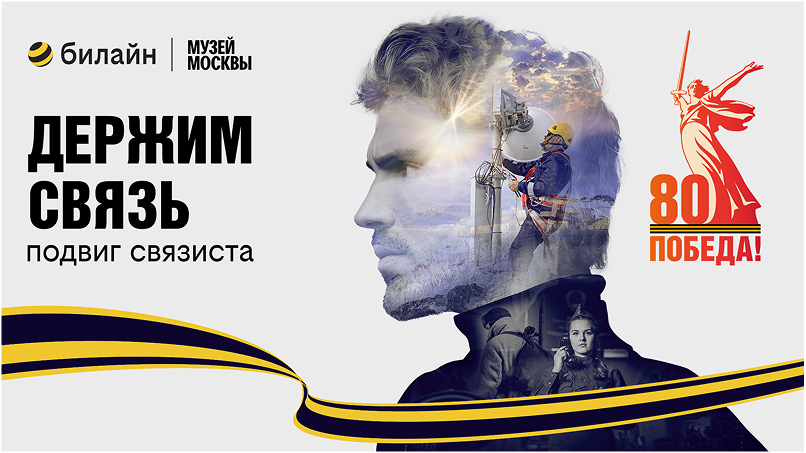

ЗАДАЧА
Сделать к 9 Мая большую кампанию Билайна о людях, чья профессия — держать связь, и показать связистов как героев, благодаря которым связь сохранялась между фронтом и тылом, людьми и поколениями.
ЛИЧНОЕ ПОРТФОЛИО2026
CVCultural campaign
Кампания к 9 Мая о людях, которые сохраняли связь в самые трудные времена. Проект начался с семейных архивов сотрудников Билайна, а вырос в выставку в Музее Москвы, спектакль и коллаборацию.



Сделать к 9 Мая большую кампанию Билайна о людях, чья профессия — держать связь, и показать связистов как героев, благодаря которым связь сохранялась между фронтом и тылом, людьми и поколениями.
Есть такая профессия — держать связь. Мы построили кампанию вокруг реальных историй связистов, которые сотрудники Билайна нашли в своих семейных архивах.
Кампания началась внутри Билайна со сбора семейных историй о связистах, а затем выросла в лендинг, выставку в Музее Москвы, спектакль-читку, коллаборацию с Политехническим музеем и мерч.
Сначала обратились к сотрудникам Билайна с предложением поделиться историями близких, кто во время войны был связистом. Люди присылали тексты, фотографии, документы и личные архивы.
Из этих материалов собрали базу реальных историй о связистах — не выдуманных героев, а людей из семей сотрудников — с именами, судьбами, профессией и личной памятью.
К 9 Мая истории стали выставкой в Музее Москвы. Так профессия связиста получила физическое пространство: документы, фотографии и рассказы превратились в публичный жест памяти.
Отдельным событием стал спектакль-читка по реальным историям. Материалы сотрудников прозвучали со сцены — как живые голоса людей, которые держали связь в буквальном смысле.
Коллаборация с Политехническим музеем добавила технологический слой: через экспонаты в витрине мы показали, как развивалась связь — от первых устройств до современного Билайна.


ОТКРЫТА К НОВЫМ ЗАДАЧАМ
И ИНТЕРЕСНЫМ БРИФАМ